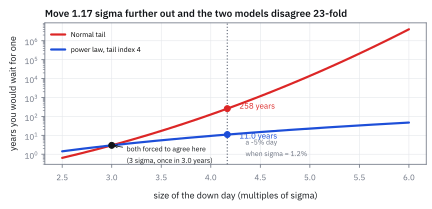
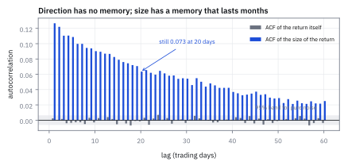
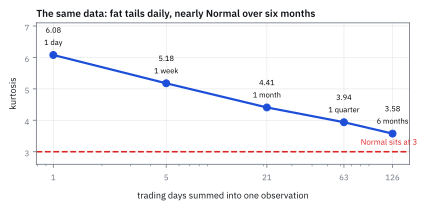
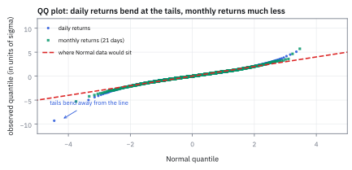

25.2 The Stylized Facts of Stock Returns
ผลตอบแทนหุ้นทุกตลาดมีสี่นิสัยเหมือนกัน: ทิศไม่มีความจำ หางหนากว่า Normal ขนาดของการขยับมีความจำ และหางบางลงเมื่อรวมหลายวัน หน้านี้วัดทั้งสี่ข้อเป็นตัวเลข และบอกว่าข้อไหนทำให้แบบจำลองแบบไหนตก
ดัชนีหุ้นตัวหนึ่งมีความผันผวน 1.2% ต่อวัน ทีมความเสี่ยงถามว่าควรกันทุนไว้รับวันที่ตลาดร่วง 5% ไหม นักวิเคราะห์คนหนึ่งใช้ Normal แล้วตอบว่า “ไม่ต้อง วันแบบนั้นเกิดครั้งเดียวในราว 250 ปี” วันแบบนี้ควรเกิดบ่อยแค่ไหน?
ลองตอบก่อนเปิดเฉลย
Normal ตอบครั้งเดียวใน 256.8 ปีจริง แต่ถ้าหางลดลงแบบ power law ที่ดัชนี 4 และบังคับให้ตรงกับ Normal ที่ 3σ วันเดียวกันเกิดครั้งเดียวใน 10.94 ปี บ่อยกว่า 23.5 เท่า ที่ดัชนี 3 เป็นครั้งเดียวใน 7.88 ปี และในตลาดจำลองที่มีความผันผวนเกาะกลุ่มแบบ GARCH วันที่ร่วงเกิน 4.17σ เกิด 484 วันใน 400,000 วัน ขณะที่ Normal คาดไว้ 6.2 วัน ต้องกันทุน
สิ่งที่เราจะสร้าง
10.4 เห็นแล้วว่า GBM ตกที่หาง (kurtosis 4.70 ในปีสงบ และวัน −18.2 SD ในปี 1987) 16.1 เห็นว่าผลตอบแทนแทบไม่จำทิศทางแต่จำขนาด และ 16.4 สร้าง GARCH ที่ให้ kurtosis 5.08 จาก $z_t$ ที่เป็น Normal หน้านี้รวบเรื่องเหล่านี้เป็นสี่ข้อที่เรียกว่า stylized facts และวัดแต่ละข้อเป็นตัวเลข
ลำดับคือ บีบหาง Normal ด้วยสองขอบที่ได้จากการอินทิเกรตทีละส่วน เทียบกับหางแบบ power law ดูว่าโมเมนต์ไหนมีค่าจำกัดและทำไมมันตัดสินว่าความผันผวนประมาณได้ไหม สร้างตลาดจำลอง GARCH กับ Student-t ที่มีครบทุกนิสัย หา ACF และ kurtosis ของมันด้วยสูตรปิด พิสูจน์ว่าทำไม kurtosis ลดลงเมื่อรวมหลายวัน แล้ววัดของจริงจากการจำลอง 400,000 วัน
ศัพท์ที่ใช้ในหัวข้อนี้
- Stylized facts
- นิสัยเชิงสถิติที่เจอซ้ำในทุกตลาดหุ้นและทุกยุค ใช้เป็นด่านแรกที่แบบจำลองผลตอบแทนต้องผ่านก่อนเอาไปคุมความเสี่ยง
- Tail index
- เลข $\zeta$ ในหางแบบ power law $P(|X|\gt x)=Cx^{-\zeta}$ ยิ่งเล็กหางยิ่งหนา และบอกว่าโมเมนต์ลำดับไหนยังมีค่าจำกัด ตำราหลายเล่มใช้ $\alpha$ แต่หน้านี้ใช้ $\alpha$ กับ GARCH แล้ว
- Kurtosis
- $\mathbb E[r^4]/(\mathbb E[r^2])^2$ เมื่อค่าเฉลี่ยเป็นศูนย์ Normal มีค่า 3 ค่าที่สูงกว่าแปลว่าวันสุดโต่งเกิดบ่อยกว่า Normal
- Volatility clustering
- วันที่ขยับแรงเกาะกลุ่มกัน และช่วงสงบก็ยาว เห็นเป็น ACF ที่เป็นบวกและจางช้าของ $|r_t|$ และ $r_t^2$ ทำให้ความผันผวนพยากรณ์ได้แม้ทิศทางจะพยากรณ์ไม่ได้
- Aggregational Gaussianity
- ผลตอบแทนที่รวมหลายวันมีรูปร่างเข้าใกล้ Normal มากขึ้น kurtosis รายเดือนต่ำกว่ารายวัน ความหนาของหางจึงต้องบอกความถี่ที่วัดเสมอ
- Unconditional และ conditional
- unconditional คือรูปร่างเมื่อเทข้อมูลทุกวันรวมกันโดยไม่สนว่าวันนั้นสงบหรือปั่นป่วน conditional คือรูปร่างของพรุ่งนี้เมื่อรู้อดีตถึงวันนี้ ตัวแรกหางหนากว่าตัวหลัง
- Leverage effect
- วันลบดันความผันผวนแรงกว่าวันบวกขนาดเท่ากัน เคยนับเป็นข้อที่ห้า แต่ในข้อมูลช่วงหลังอ่อนลง หน้านี้จึงแยกไว้ต่างหาก
สัญลักษณ์และหน่วย
| สัญลักษณ์ | ความหมาย | หน่วย |
|---|---|---|
| $r_t,\ \sigma$ | ผลตอบแทนรายวัน และความผันผวนรายวัน | ทศนิยมต่อวัน |
| $x$ | ขนาดของวันที่สนใจ เป็นจำนวนเท่าของ $\sigma$ | ไม่มีหน่วย |
| $\varphi(x),\ \bar F(x)$ | density ของ Normal มาตรฐาน และโอกาสที่ค่าจะเกิน $x$ | ไม่มีหน่วย |
| $\zeta,\ C$ | tail index และค่าคงที่ของหาง power law | ไม่มีหน่วย |
| $\omega,\ \alpha,\ \beta,\ p$ | parameter ของ GARCH(1,1) จาก 16.4 และ $p=\alpha+\beta$ | ทศนิยม², ไม่มีหน่วย |
| $\nu,\ \kappa_z$ | degrees of freedom ของ Student-t และ $\mathbb E[z^4]$ ของก้อนสุ่มมาตรฐาน | ไม่มีหน่วย |
| $V,\ K,\ \rho_k$ | variance ระยะยาว, kurtosis รายวัน, ACF ของ $r_t^2$ ที่ lag $k$ | ทศนิยม², ไม่มีหน่วย |
| $m,\ K_m$ | จำนวนวันที่รวมเป็นหนึ่งงวด และ kurtosis ของผลรวมนั้น | วันทำการ, ไม่มีหน่วย |
ขั้นที่ 1 — บีบหางของ Normal ด้วยสองขอบ
คำถามเปิดหน้าต้องการโอกาสที่ Normal มาตรฐานจะเกิน $x$ ไกลออกไปในหาง อยากได้สูตรที่คิดในหัวได้และรู้ว่าผิดไม่เกินเท่าไร เครื่องมือคือความจริงข้อเดียวของ density: $\varphi'(t)=-t\varphi(t)$ แล้วอินทิเกรตทีละส่วน (integration by parts)
บรรทัดที่สองมาจากการให้ $1/t$ เป็นส่วนที่หาอนุพันธ์ และ $t\varphi(t)$ เป็นส่วนที่อินทิเกรตได้ $-\varphi(t)$ ทันที ก้อนที่ลบออกเป็นบวกเสมอ จึงได้ขอบบน ทำกลวิธีเดิมกับก้อนนั้นอีกรอบ ($1/t^3$ คูณ $t\varphi(t)$) ได้ว่ามันไม่เกิน $\varphi(x)/x^3$ จึงได้ขอบล่าง
ช่องว่างระหว่างสองขอบคือตัวคูณ $1-1/x^2$ ยิ่งไกลในหาง ยิ่งแคบ ที่ $x=4$ ต่างกันแค่ 6% ขอบบน $\varphi(x)/x$ จึงใช้แทนค่าจริงในหัวได้
ขั้นที่ 2 — วัน −5% ที่ความผันผวน 1.2%: ครั้งเดียวใน 257 ปี
โจทย์ให้อะไรมาบ้าง: ความผันผวน 1.2% ต่อวัน ค่าเฉลี่ยถือเป็นศูนย์ วันที่ร่วง 5% จึงอยู่ที่ $-0.05/0.012$ เท่าของ $\sigma$ Normal สมมาตร โอกาสต่ำกว่า $-x$ จึงเท่ากับ $\bar F(x)$ ปีละ 252 วันทำการตามข้อตกลงของ 1.1
คำตอบ: Normal บอกว่าวัน −5% เกิดครั้งเดียวในราว 64,707 วันทำการ หรือ 256.8 ปี ค่าจริง $1.5454\times10^{-5}$ คิดด้วยการอินทิเกรต density และอยู่ในกรอบของขั้นที่ 1 พอดี
ตรวจเองใน 10 วินาที: $\varphi(4.17)$ ราว $e^{-8.68}/2.507\approx6.8\times10^{-5}$ หารด้วย 4.17 ได้ราว $1.6\times10^{-5}$ ซึ่งคือขอบบน
ขั้นที่ 3 — หางแบบ power law: ครั้งเดียวใน 11 ปี
ข้อมูลผลตอบแทนจริงมีหางที่ลดลงช้ากว่า Normal มาก รูปที่ใช้กันมากคือ power law ซึ่งเป็นนิยามของแบบจำลองหาง งานวัดส่วนใหญ่ได้ $\zeta$ ราว 3 ถึง 4 สำหรับหุ้น เพื่อไม่ให้เทียบไม่ยุติธรรม บังคับให้หางนี้ตรงกับ Normal ที่ 3σ ซึ่งยังมีข้อมูลพอให้เห็น แล้วดูว่าแต่ละแบบว่าอย่างไรที่ 4.1667σ สังเกตว่า $3/4.1667=0.72$ พอดี
บรรทัดที่สามคือทั้งหมดของการบังคับให้ตรงกัน: ค่าคงที่ $C$ หักกันไปเหลือแค่อัตราส่วนของระยะ ห่างออกไปแค่ 1.17σ Normal กับ power law ที่ $\zeta=4$ ต่างกัน 23.5 เท่า และที่ $\zeta=3$ ต่างกัน 32.6 เท่า
สองแบบนี้ต่างกันคนละสายพันธุ์: power law ที่ $\zeta=4$ ไกลออกไปสองเท่า โอกาสเหลือ $2^{-4}=1/16$ ส่วน Normal จาก 3σ ไป 6σ โอกาสเหลือ $7.3\times10^{-7}$ เท่า
Figure 25.2a — หาง Normal กับหาง power law: วัน −5% เกิดบ่อยแค่ไหน

ขั้นที่ 4 — โมเมนต์ไหนมีค่าจำกัด
หางหนาไม่ได้แปลว่าทุกอย่างระเบิด คำถามที่ถูกคือโมเมนต์ลำดับไหนยังมีค่าจำกัด หา density ของหางจากการหาอนุพันธ์ของ $1-\bar F$ แล้วดูว่าก้อนหางของ $\mathbb E[|X|^k]$ จบที่ค่าจำกัดไหมเมื่อขอบบน $L$ ไกลออกไป
ถ้า $k\lt\zeta$ เลขชี้กำลัง $k-\zeta$ ติดลบ $L^{k-\zeta}$ หายไปเมื่อ $L$ ไกล โมเมนต์จึงจำกัด ถ้า $k\ge\zeta$ มันโตไม่หยุด บรรทัดสุดท้ายคือกรณีที่ $\zeta=3$: โมเมนต์ที่สี่โตเป็นเส้นตรงตามวันที่แย่ที่สุดที่เคยเห็น ยิ่งมีข้อมูลนาน ยิ่งเจอวันแย่กว่าเดิม ค่าที่วัดได้จึงไม่เคยนิ่ง
ที่ $\zeta$ ราว 3 ถึง 4 ค่าเฉลี่ยและ variance มีค่า แต่โมเมนต์ที่สี่อยู่ตรงขอบ ขั้นถัดไปแสดงว่าทำไมขอบนี้สำคัญกับการประมาณความผันผวน
ขั้นที่ 5 — ทำไมโมเมนต์ที่สี่ตัดสินว่าความผันผวนประมาณได้แม่นแค่ไหน
ความผันผวนประมาณจากค่าเฉลี่ยของ $r_t^2$ Central Limit Theorem ของ 3.2 บอกว่าค่าเฉลี่ยของ $n$ ค่าที่อิสระคลาดเคลื่อนราว SD ของหนึ่งค่าหารด้วย $\sqrt n$ แต่มีเงื่อนไขว่า SD นั้นต้องมีค่า SD ของ $r^2$ ขึ้นกับโมเมนต์ที่สี่ ขั้นนี้สมมติค่าเฉลี่ยศูนย์และแต่ละวันอิสระกัน
บรรทัดที่สามใช้นิยามของ kurtosis $\mathbb E[r^4]=K\sigma^4$ ข้อมูลหนึ่งปีรายวันบอก variance ได้แม่น ±8.91% ถ้าเป็น Normal แต่ถ้า kurtosis เป็น 6.34 แบบตลาดจำลองของขั้นที่ 6 กรอบกว้างขึ้นเป็น ±14.56% หรือความผันผวน ±7.28% ถ้าโมเมนต์ที่สี่ไม่มีค่า กรอบนี้ไม่หดตาม $\sqrt n$ เลย
kurtosis เองยิ่งวัดยาก เพราะต้องการโมเมนต์ที่แปด ข้อมูลรายวันของหุ้นสหรัฐฯ ปี 2001 ถึง 2017 ให้ kurtosis ของกองทุน SPY ที่ตามดัชนี S&P 500 เป็น 11.4 โดยช่วงความเชื่อมั่น 99% จาก bootstrap กว้างตั้งแต่ 6.5 ถึง 16.0 และหุ้นบางตัวได้ 29.8 ในช่วง 12.8 ถึง 48.1
ขั้นที่ 6 — ตลาดจำลองที่มีครบทุกนิสัย: GARCH กับ Student-t
จะวัดนิสัยทั้งสี่ให้เห็นกับตา ต้องมีข้อมูลที่รู้คำตอบ ใช้ GARCH(1,1) ของ 16.4 ที่ $\omega=3.1\times10^{-6}$, $\alpha=0.07$, $\beta=0.90$ แต่ให้ก้อนสุ่ม $z_t$ เป็น Student-t ที่ $\nu=8$ ปรับให้ variance เป็น 1 ค่า $\kappa_z=\mathbb E[z^4]=3(\nu-2)/(\nu-4)=4.5$ เป็นสมบัติของ Student-t ที่ใช้เป็นข้อมูลตั้งต้น สูตร kurtosis คือสูตรของขั้นที่ 9 ใน 16.4 ที่เปลี่ยนเลข 3 ของ Normal เป็น $\kappa_z$
$c_4$ คือค่าเฉลี่ยของ $(\alpha z^2+\beta)^2$ ซึ่งต้องน้อยกว่า 1 โมเมนต์ที่สี่จึงมีค่า ที่นี่ 0.958 ผ่าน ถ้าใช้ $z_t$ ที่เป็น Normal ($\kappa_z=3$) สูตรเดียวกันให้ $K=3.596$ ความเกาะกลุ่มอย่างเดียวดันจาก 3 ขึ้นไป 3.6 ส่วน Student-t ดันต่อไปถึง 6.34
ตลาดนี้มีหางที่ใหญ่ขึ้นสองชั้น: ในวันเดียว $z_t$ หางหนากว่า Normal (conditional) และเมื่อเทหลายวันรวมกันก็ผสมวันสงบกับวันปั่นป่วน (unconditional) หางรวมจึงหนากว่าหางรายวันเสมอ
ขั้นที่ 7 — ข้อ 1 และข้อ 3: ทิศไม่มีความจำ แต่ขนาดมี
ข้อ 1 คือ ACF ของผลตอบแทนเป็นศูนย์ ข้อ 3 คือ ACF ของขนาดเป็นบวกและจางช้า ตลาดจำลองมีทั้งสองอย่าง พิสูจน์ข้อแรกด้วยการแยกค่าเฉลี่ยของผลคูณ ส่วนข้อหลังใช้ผลของขั้นที่ 8 ใน 16.4 ว่า $r_t^2$ เป็น ARMA(1,1) ที่ $\phi=p$
บรรทัดแรกแยกได้เพราะ $\sigma_t$ และ $r_{t-k}$ รู้แล้วตั้งแต่เมื่อวาน ส่วน $z_t$ เป็นของใหม่ที่ค่าเฉลี่ยศูนย์ ไม่ว่ามันจะมาจาก Normal หรือ Student-t ACF ของ $r_t^2$ ไม่ขึ้นกับ $\kappa_z$ ขอแค่โมเมนต์ที่สี่มีค่า
การจำลอง 400,000 วันในโค้ดท้ายหน้าได้ ACF ของ $r_t$ ที่ lag 1, 5, 20, 60 เป็น −0.0026, −0.0018, −0.0021, −0.0021 อยู่ในแถบ $\pm2/\sqrt n=\pm0.0032$ ทั้งหมด ACF ของ $r_t^2$ เป็น 0.1492, 0.1201, 0.0726, 0.0149 ใกล้สูตร และของ $|r_t|$ เป็น 0.1340, 0.1193, 0.0733, 0.0182
Figure 25.2b — ทิศไม่มีความจำ แต่ขนาดมีความจำเป็นเดือน

ขั้นที่ 8 — ข้อ 2 และข้อ 4: ทำไม kurtosis ลดลงเมื่อรวมหลายวัน
รวม $m$ วันเป็นผลตอบแทนหนึ่งงวด $S=r_1+\cdots+r_m$ ความหนาของหางรายงวดคือ $K_m=\mathbb E[S^4]/(\mathbb E[S^2])^2$ กางกำลังสี่ของผลบวกออก พจน์ที่มีดัชนีล่าสุดขึ้นกำลังคี่มีค่าเฉลี่ยศูนย์ เพราะ $z$ ของวันนั้นสมมาตรและใหม่ เหลือแค่ $r_i^4$ กับคู่ $r_i^2r_j^2$ ซึ่งมี $\binom42=6$ แบบต่อคู่
บรรทัดของ $\mathbb E[r_i^2r_j^2]$ คือนิยามของ covariance บวกผลคูณของค่าเฉลี่ย โดย variance ของ $r^2$ คือ $(K-1)V^2$ จากขั้นที่ 5 คู่ที่ห่างกัน $k$ วันมีอยู่ $m-k$ คู่ รวมแล้วหารด้วย $m^2V^2$ ได้บรรทัดสุดท้าย
ถ้าวันอิสระกัน ($\rho_k=0$) ส่วนเกินจาก 3 หดเป็น $(K-3)/m$ ทันที แต่ความเกาะกลุ่มเติมพจน์บวกเข้าไป หางรายเดือนจึงยังหนาอยู่นานกว่าที่วันอิสระจะให้มาก
| $m$ (วัน) | สูตร $K_m$ | ถ้าวันอิสระ | จำลองในโค้ด | ในรูป 25.2c |
|---|---|---|---|---|
| 1 | 6.340 | 6.340 | 6.491 | 6.08 |
| 5 | 5.395 | 3.668 | 5.243 | 5.18 |
| 21 | 4.925 | 3.159 | 5.277 | 4.41 |
| 63 | 4.345 | 3.053 | 4.586 | 3.94 |
| 126 | 3.899 | 3.027 | 4.551 | 3.58 |
คอลัมน์สูตรลดลงทุกแถว ข้อมูลจำลองสองชุดลดลงตามโดยรวมแต่แกว่งรอบสูตรได้เกือบหนึ่งหน่วย ชุดในโค้ดยังขึ้นจาก 5.243 เป็น 5.277 ระหว่าง 5 กับ 21 วัน เหตุผลอยู่ในขั้นถัดไป
Figure 25.2c — ยิ่งรวมหลายวัน หางยิ่งบาง

Figure 25.2d — QQ plot: รายวันงอที่หาง รายเดือนงอน้อยกว่า

ขั้นที่ 9 — วัดจากตลาดจำลอง 400,000 วัน
โจทย์ให้อะไรมาบ้าง: โค้ดท้ายหน้าจำลองตลาดของขั้นที่ 6 ยาว 400,000 วัน (ราว 1,587 ปีของวันทำการ) ด้วยตัวสุ่ม mulberry32 seed 25 เริ่มที่ variance ระยะยาว ให้หาจำนวนวันที่ร่วงเกิน 4.1667 เท่าของ SD ของตัวอย่าง เทียบกับที่ Normal คาดไว้ และ kurtosis ของแต่ละช่วง 100,000 วัน
คำตอบ: ตลาดนี้มีวันที่ร่วงเกิน 4.17σ 484 วัน มากกว่าที่ Normal คาดไว้ 78 เท่า วันที่แย่ที่สุดคือ −15.1 เท่าของ SD kurtosis ของสี่ช่วง ช่วงละ 100,000 วันจากแบบจำลองเดียวกันคือ 6.968, 7.169, 6.070 และ 5.729 ต่างกันถึง 1.44 ทั้งที่แต่ละช่วงยาวราว 397 ปี
นี่คือเหตุผลที่ตารางในขั้นที่ 8 แกว่ง Student-t ที่ $\nu=8$ มีโมเมนต์ได้แค่ลำดับที่น้อยกว่า 8 โมเมนต์ที่แปดของ $r_t$ จึงไม่มีค่า variance ของ kurtosis จากตัวอย่างก็ไม่มีค่าตามไปด้วย ตามเหตุผลของขั้นที่ 4 และ 5 kurtosis จึงเป็นตัวเลขที่ต้องรายงานพร้อมคำเตือนเสมอ
ตรวจเองใน 10 วินาที: $400{,}000\times1.5\times10^{-5}=6$ วัน และ $484/6\approx80$ เท่า
แบบจำลองไหนผ่านข้อไหน
| ข้อ | GBM (10.1) | GARCH กับ Normal | GARCH กับ Student-t |
|---|---|---|---|
| 1 ทิศไม่มีความจำ | ผ่าน | ผ่าน | ผ่าน |
| 2 หางหนา | ตก: kurtosis 3 เสมอ | บางส่วน: 3.60 ในตลาดนี้ | ผ่าน: 6.34 |
| 3 ขนาดมีความจำ | ตก: ACF ของ $r^2$ เป็นศูนย์ | ผ่าน: 0.139 จางด้วย 0.97 | ผ่าน: เท่ากัน |
| 4 รวมแล้วเข้าใกล้ Normal | เป็น Normal ทุกความถี่อยู่แล้ว | ผ่าน แต่ช้า | ผ่าน แต่ช้า |
GARCH ยังมีจุดอ่อนที่งานวัดข้อมูลจริงพบ: ถ้าปรับให้ kurtosis ตรงกับดัชนีจริง ACF ของ $r^2$ ที่แบบจำลองทำนายมักสูงเกินที่วัดได้ และความจำของมันยาวเกินจริง ตลาดจำลองนี้ก็ไม่มี Taylor effect ที่ข้อมูลจริงมักมี คือ ACF ของ $|r|$ สูงกว่าของ $r^2$ ที่นี่กลับกัน 0.134 เทียบ 0.149
คำถามที่ควรถามออกมาดัง ๆ
ACF ของผลตอบแทนเป็นศูนย์ แปลว่าทายผลตอบแทนไม่ได้ใช่ไหม? ไม่ใช่ ACF วัดแค่ความสัมพันธ์เชิงเส้นกับอดีตของตัวเอง ผลตอบแทนอาจทายได้จากตัวแปรอื่น หรือจากอดีตแบบที่ไม่เป็นเส้นตรง และขั้นที่ 7 แสดงว่าขนาดของมันทายได้ชัด ๆ
ทำไมหางรวมหนากว่าหางรายวัน? เพราะผลตอบแทนที่เทรวมกันคือส่วนผสมของวันที่ $\sigma_t$ ต่ำกับวันที่ $\sigma_t$ สูง ส่วนผสมของความกว้างที่ต่างกันทำให้หางหนา เหมือนตัวอย่างครึ่งต่อครึ่งในขั้นที่ 9 ของ 16.4
ความผิดที่ให้คำตอบผิดโดยไม่มีอะไรเตือน
ใช้ Normal ตั้งทุนรับวันแย่: Normal ให้ครั้งเดียวใน 256.8 ปี power law ที่ดัชนี 4 ให้ครั้งเดียวใน 10.94 ปี ทุนที่กันไว้ตาม Normal ต่ำไปในวันที่ต้องใช้มันจริง
เทียบ kurtosis ข้ามความถี่: ตลาดเดียวกันมี kurtosis 6.34 รายวันและ 4.92 ราย 21 วันตามสูตร กองทุนที่รายงาน kurtosis รายเดือนต่ำกว่าอีกกองที่รายงานรายวัน ไม่ได้แปลว่าเสี่ยงหางน้อยกว่า
เชื่อ kurtosis ทศนิยมสองตำแหน่ง: แบบจำลองเดียวกันให้ 5.73 ถึง 7.17 ในช่วงละ 100,000 วัน ข้อมูลจริง 17 ปีของ SPY มีช่วงความเชื่อมั่น 6.5 ถึง 16.0
อ่านวันเงียบหนึ่งปีว่าหางบาง: ถ้า $\zeta$ ราว 3 โมเมนต์ที่สี่ของข้อมูลโตตามวันที่แย่ที่สุดที่เคยเห็น ปีที่ไม่มีวันแย่จะให้ kurtosis ต่ำ ซึ่งบอกแค่ว่าวันแย่ยังไม่มา
ใช้ทำอะไรบนโต๊ะจริง
ข้อ 3 คือเหตุผลที่ระบบความเสี่ยงพยากรณ์ความผันผวนรายวันด้วย GARCH หรือ EWMA (16.4, 25.5) แทนค่าคงที่ ข้อ 2 คือเหตุผลที่ VaR จาก Normal ต่ำไป และ Expected Shortfall กับ stress test ใน 17.1 ต้องมี ข้อ 4 บอกให้ระบุความถี่ทุกครั้งที่รายงานความหนาของหาง
ขั้นที่ 5 บอกว่าการวัดความเสี่ยงด้วยความผันผวนจะแม่นขึ้นตามข้อมูล ตราบที่โมเมนต์ที่สี่ยังมีค่า นี่คือเหตุผลเชิงเทคนิคที่แบบจำลองความเสี่ยงของบทที่ 26 และ 27 สร้างบน variance และ covariance ไม่ใช่บน kurtosis และทำไม 27.5 ต้องจัดการ outlier ก่อนประมาณ
สามโจทย์ตรวจความเข้าใจ
1. หุ้นตัวหนึ่งมีความผันผวน 2% ต่อวัน วันที่ร่วง 8% อยู่ที่กี่ $\sigma$ Normal ให้ครั้งเดียวในกี่ปี และ power law ที่ $\zeta=4$ ที่ตรงกับ Normal ที่ 3σ ให้กี่ปี?
เฉลย
$x=0.08/0.02=4$ ขอบบน $\varphi(4)/4=3.34576\times10^{-5}$ ขอบล่าง $3.34576\times10^{-5}(1-1/16)=3.13665\times10^{-5}$ ค่าจริง $3.1671\times10^{-5}$ ได้ครั้งเดียวใน $1/(3.1671\times10^{-5}\times252)=125.3$ ปี power law: $1.3499\times10^{-3}(3/4)^4=4.2712\times10^{-4}$ ได้ครั้งเดียวใน 9.29 ปี
2. ถ้าวัดหางของหุ้นตัวหนึ่งได้ $\zeta=3.5$ โมเมนต์ลำดับไหนมีค่าจำกัด และการประมาณ variance จากข้อมูลรายวันจะเป็นอย่างไร?
เฉลย
โมเมนต์ลำดับที่น้อยกว่า 3.5 มีค่า: ค่าเฉลี่ย variance และโมเมนต์ที่สาม โมเมนต์ที่สี่ไม่มีค่า variance จึงประมาณได้ (ค่าเฉลี่ยของ $r^2$ ลู่เข้า) แต่ SE ของมันไม่หดตาม $1/\sqrt n$ ตามขั้นที่ 5 และ kurtosis จากตัวอย่างจะโตขึ้นเรื่อย ๆ ตามวันที่แย่ที่สุดที่เจอ
3. ตลาดหนึ่งมี kurtosis รายวัน $K=6$ และ ACF ของ $r^2$ เป็น 0.2 ที่ lag 1 และศูนย์ที่ lag อื่น kurtosis ของผลรวมสองวันเป็นเท่าไร เทียบกับกรณีวันอิสระ?
เฉลย
สูตรของขั้นที่ 8 ที่ $m=2$ มีคู่ห่างกันหนึ่งวันแค่คู่เดียว: $K_2=3+(6-3)/2+6(5)(1)(0.2)/4=3+1.5+1.5=6.0$ ถ้าวันอิสระได้ $3+1.5=4.5$ ความเกาะกลุ่มชดเชยการเจือจางของสองวันจนหมด หางสองวันหนาเท่าหางวันเดียว
คำนวณซ้ำด้วย JavaScript
รันใน Node.js ได้โดยไม่ติดตั้งแพ็กเกจ โค้ดคิดหาง Normal ด้วยการอินทิเกรต density แบบ Simpson เทียบกับสองขอบ คิดหาง power law และสูตรปิดของตลาดจำลอง GARCH กับ Student-t (variance ระยะยาว kurtosis ACF ของ $r^2$ และ kurtosis ของผลรวม $m$ วัน) แล้วจำลองตลาดนั้น 400,000 วันด้วย seed 25 วัด ACF และ kurtosis จริง และพิมพ์ตัวเลขหลักหนึ่งบรรทัด ใช้เวลาไม่ถึงหนึ่งวินาที
const {sqrt, exp, log, cos, sin, abs, floor, PI} = Math;
function positive(name, v) {
if (typeof v !== 'number' || !Number.isFinite(v) || !(v > 0)) throw new RangeError(`${name} must be a positive number`);
return v;
}
const density = x => exp(-x * x / 2) / sqrt(2 * PI);
// Normal upper tail: substitute t = x + s, then Simpson on phi(x) * exp(-x s - s^2/2) for s from 0 to 40/x.
function normalTail(x) {
positive('x', x);
const L = 40 / x, n = 20000, h = L / n, g = s => exp(-x * s - s * s / 2);
let s = g(0) + g(L);
for (let i = 1; i < n; i++) s += (i % 2 ? 4 : 2) * g(i * h);
return density(x) * s * h / 3;
}
// Step 1: integration by parts twice gives phi/x (1 - 1/x^2) <= tail <= phi/x.
const tailBounds = x => ({lower: density(positive('x', x)) / x * (1 - 1 / (x * x)), upper: density(x) / x});
// Step 3: power tail C x^-zeta anchored to the Normal tail at 3 sigma.
function powerTail(x, zeta, anchor = 3) {
positive('x', x); positive('zeta', zeta); positive('anchor', anchor);
return normalTail(anchor) * (anchor / x) ** zeta;
}
// Steps 6-8: closed forms for GARCH(1,1) with standardized Student-t shocks.
function garchT({omega, alpha, beta, nu}) {
positive('omega', omega);
if (!(alpha >= 0 && beta >= 0 && alpha + beta < 1)) throw new RangeError('Need alpha, beta >= 0 and alpha + beta < 1');
if (!(nu > 4)) throw new RangeError('Student-t needs nu > 4 for a finite fourth moment');
// nu = Infinity is the Normal shock with E[z^4] = 3.
const p = alpha + beta, kz = nu === Infinity ? 3 : 3 * (nu - 2) / (nu - 4), c4 = kz * alpha * alpha + 2 * alpha * beta + beta * beta;
if (!(c4 < 1)) throw new RangeError('E[(alpha z^2 + beta)^2] >= 1: the fourth moment is infinite');
const V = omega / (1 - p), K = kz * (1 - p * p) / (1 - c4);
const rho1 = alpha * (1 - alpha * beta - beta * beta) / (1 - 2 * alpha * beta - beta * beta);
const rho = k => rho1 * p ** (k - 1);
const aggregated = m => {
if (!Number.isInteger(m) || m < 1) throw new RangeError('m must be a whole number of days');
let s = 0;
for (let k = 1; k < m; k++) s += (m - k) * rho(k);
return 3 + (K - 3) / m + 6 * (K - 1) * s / (m * m);
};
return {p, kz, c4, V, K, rho, aggregated};
}
function mulberry32(seed) {
return () => {
seed |= 0; seed = seed + 0x6D2B79F5 | 0;
let t = Math.imul(seed ^ seed >>> 15, 1 | seed);
t = t + Math.imul(t ^ t >>> 7, 61 | t) ^ t;
return ((t ^ t >>> 14) >>> 0) / 4294967296;
};
}
// Box-Muller pairs; a Student-t shock is Z / sqrt(chi-square/nu), rescaled to variance 1.
function normals(rnd) {
let spare = null;
return () => {
if (spare !== null) { const s = spare; spare = null; return s; }
let u = 0;
while (u === 0) u = rnd();
const v = rnd(), R = sqrt(-2 * log(u));
spare = R * sin(2 * PI * v);
return R * cos(2 * PI * v);
};
}
function simulate(n, seed, {omega, alpha, beta, nu}) {
garchT({omega, alpha, beta, nu});
if (!Number.isInteger(n) || n < 100) throw new RangeError('n must be a whole number of at least 100 days');
if (!Number.isInteger(nu)) throw new RangeError('this simulator needs a whole number nu');
const z = normals(mulberry32(seed)), r = new Float64Array(n), scale = sqrt((nu - 2) / nu);
let h = omega / (1 - alpha - beta), prev = 0;
for (let t = 0; t < n; t++) {
if (t) h = omega + alpha * prev * prev + beta * h;
let w = 0;
for (let k = 0; k < nu; k++) { const g = z(); w += g * g; }
prev = r[t] = sqrt(h) * z() / sqrt(w / nu) * scale;
}
return r;
}
function acf(x, k) {
const n = x.length;
let m = 0, c0 = 0, ck = 0;
for (let i = 0; i < n; i++) m += x[i];
m /= n;
for (let i = 0; i < n; i++) c0 += (x[i] - m) ** 2;
for (let i = k; i < n; i++) ck += (x[i] - m) * (x[i - k] - m);
return ck / c0;
}
function kurtosis(x) {
const n = x.length;
let m = 0, s2 = 0, s4 = 0;
for (let i = 0; i < n; i++) m += x[i];
m /= n;
for (let i = 0; i < n; i++) { const d = (x[i] - m) ** 2; s2 += d; s4 += d * d; }
return s4 / n / (s2 / n) ** 2;
}
function sums(x, m) {
const out = new Float64Array(floor(x.length / m));
for (let i = 0; i < out.length; i++) for (let j = 0; j < m; j++) out[i] += x[i * m + j];
return out;
}
const params = {omega: 3.1e-6, alpha: 0.07, beta: 0.90, nu: 8}, x5 = 0.05 / 0.012, lags = [1, 5, 20, 60], ms = [1, 5, 21, 63, 126];
const model = garchT(params), normalGarch = garchT({...params, nu: Infinity});
const market = simulate(400000, 25, params);
const size = Float64Array.from(market, abs), square = Float64Array.from(market, v => v * v);
const sd = sqrt(square.reduce((s, v) => s + v, 0) / market.length);
let beyond = 0, worst = 0;
for (const v of market) { if (v < -x5 * sd) beyond++; worst = Math.min(worst, v / sd); }
console.log(JSON.stringify({
normal: {x: x5, density: density(x5), tail: normalTail(x5), ...tailBounds(x5), days: 1 / normalTail(x5), years: 1 / normalTail(x5) / 252,
at3: normalTail(3), yearsAt3: 1 / normalTail(3) / 252, sixOverThree: normalTail(6) / normalTail(3)},
power: [4, 3].map(zeta => ({zeta, tail: powerTail(x5, zeta), years: 1 / powerTail(x5, zeta) / 252, ratio: powerTail(x5, zeta) / normalTail(x5)})),
seRelative: {normal: sqrt(2 / 252), market: sqrt((model.K - 1) / 252), marketVol: 0.5 * sqrt((model.K - 1) / 252)},
model: {V: model.V, daily: sqrt(model.V), annual: sqrt(252 * model.V), kz: model.kz, c4: model.c4, K: model.K, normalK: normalGarch.K,
rho: lags.map(model.rho), aggregated: ms.map(model.aggregated), independent: ms.map(m => 3 + (model.K - 3) / m)},
sim: {n: market.length, sd, band: 2 / sqrt(market.length), acfR: lags.map(k => acf(market, k)), acfSquare: lags.map(k => acf(square, k)),
acfSize: lags.map(k => acf(size, k)), kurtosis: ms.map(m => kurtosis(sums(market, m))),
blocks: [0, 1, 2, 3].map(b => kurtosis(market.subarray(b * 100000, (b + 1) * 100000))),
beyond, expected: market.length * normalTail(x5), worst},
exercises: {x4: {tail: normalTail(4), ...tailBounds(4), years: 1 / normalTail(4) / 252, power: powerTail(4, 4), powerYears: 1 / powerTail(4, 4) / 252},
twoDay: 3 + (6 - 3) / 2 + 6 * (6 - 1) * 0.2 / 4, twoDayIndependent: 3 + (6 - 3) / 2}
}));ที่มาที่ไป
Benoit Mandelbrot ชี้ในปี 1963 ว่าการเปลี่ยนแปลงของราคาฝ้ายมีหางหนากว่า Normal มาก และ Eugene Fama วัดเรื่องเดียวกันในหุ้นช่วงกลางทศวรรษ 1960 การเกาะกลุ่มของความผันผวนเป็นแรงจูงใจของ ARCH ในปี 1982 ปี 2001 Rama Cont รวบรวมนิสัยที่เจอซ้ำในตลาดต่าง ๆ ไว้ในบทความเดียว จนคำว่า stylized facts กลายเป็นคำที่ใช้กันทั่วไป
ข้อจำกัด: ข้อเท็จจริงเหล่านี้บอกอะไร และไม่บอกอะไร
| ข้อ | สิ่งที่บอก | สิ่งที่ไม่บอก | ผลเวลาใช้งาน |
|---|---|---|---|
| ACF ของผลตอบแทนเป็นศูนย์ | ทิศไม่ซ่อนอยู่ในราคาอดีตแบบเชิงเส้น | ไม่ได้บอกว่าอิสระ หรือว่าตัวแปรอื่นทายไม่ได้ | alpha ต้องมาจากข้อมูลอื่น ไม่ใช่ ACF ของราคาตัวเอง |
| หางหนา $\zeta$ ราว 3 ถึง 4 | วันสุดโต่งบ่อยกว่า Normal หลายสิบเท่า | ไม่ได้ระบุ distribution ที่แน่นอน และ $\zeta$ เองประมาณยาก | ใช้ Expected Shortfall และ stress test เสริม VaR |
| ขนาดมีความจำ | ความผันผวนพยากรณ์ได้ | ไม่ได้บอกว่าจะกระโดดเมื่อไร | แบบจำลองตามหลังการเปลี่ยนภาวะเสมอ 27.3 เติมกลไกระยะสั้น |
| รวมแล้วเข้าใกล้ Normal | รายเดือนใกล้ Normal กว่ารายวัน | ไม่ได้แปลว่าความเสี่ยงหางหายไป และเข้าใกล้ช้ากว่าวันอิสระมาก | ตัวเลขหางต้องระบุความถี่เสมอ |
สิ่งที่ควรตอบได้หลังอ่าน
- อินทิเกรตทีละส่วนสองครั้งให้ $\varphi(x)/x\,(1-1/x^2)\le\bar F(x)\le\varphi(x)/x$ วัน −5% ที่ความผันผวน 1.2% คือ 4.17σ ซึ่ง Normal ให้ครั้งเดียวใน 256.8 ปี
- หาง power law ที่ $\zeta=4$ ที่ตรงกับ Normal ที่ 3σ ให้วันเดียวกันครั้งเดียวใน 10.94 ปี บ่อยกว่า 23.5 เท่า และโมเมนต์ลำดับ $k$ มีค่าเฉพาะเมื่อ $k\lt\zeta$
- SE สัมพัทธ์ของ variance คือ $\sqrt{(K-1)/n}$: ข้อมูลหนึ่งปีให้ ±8.91% ถ้า Normal และ ±14.56% ที่ $K=6.34$ ต้องมีโมเมนต์ที่สี่ความผันผวนจึงแม่นขึ้นตามข้อมูล
- ACF ของผลตอบแทนเป็นศูนย์ แต่ ACF ของ $r^2$ ในตลาดจำลองคือ 0.139 และจางด้วย 0.97 ต่อวัน ACF ศูนย์จึงไม่ได้แปลว่าอิสระ
- $K_m=3+(K-3)/m+6(K-1)\sum(m-k)\rho_k/m^2$: kurtosis ลดจาก 6.34 รายวันเป็น 4.92 ราย 21 วัน ช้ากว่า 3.16 ของวันอิสระมาก และ kurtosis จากข้อมูลแกว่งได้ทีละหนึ่งหน่วย
ทั้งหน้านี้สมมติว่าราคาที่ใช้คิดผลตอบแทนคือราคาที่ถูกต้อง 25.3 แสดงว่าราคาที่บันทึกได้มีความคลาดเคลื่อนของตัวเอง และความคลาดเคลื่อนนั้นทิ้งลายนิ้วมือไว้ที่ lag 1